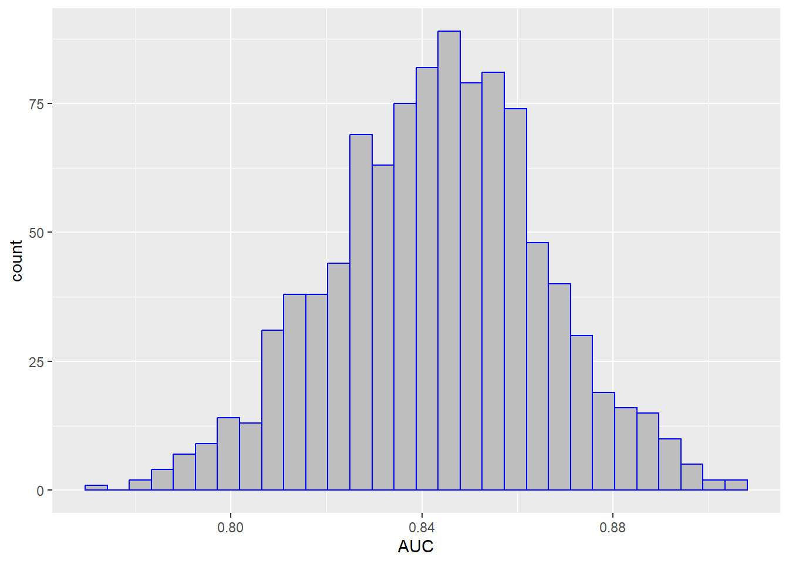
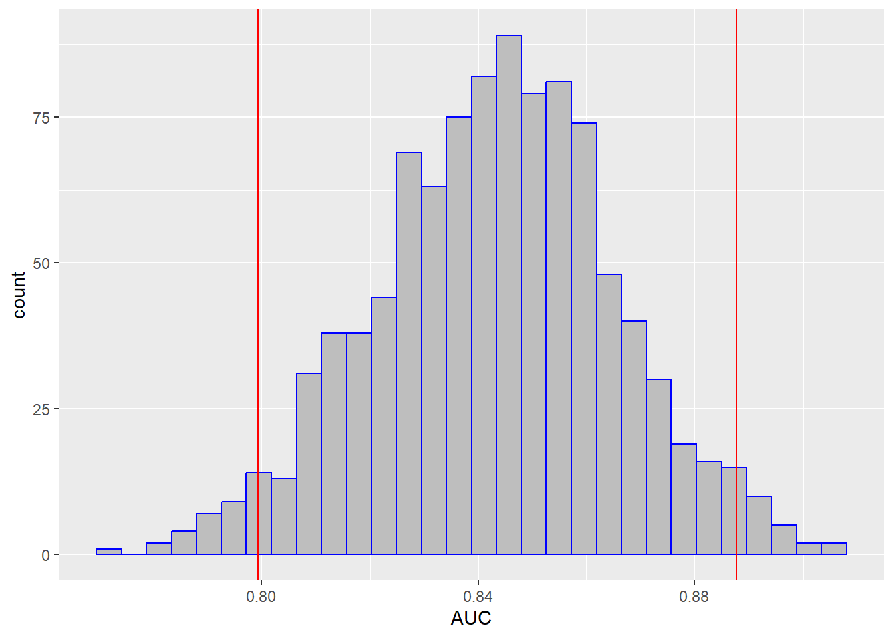
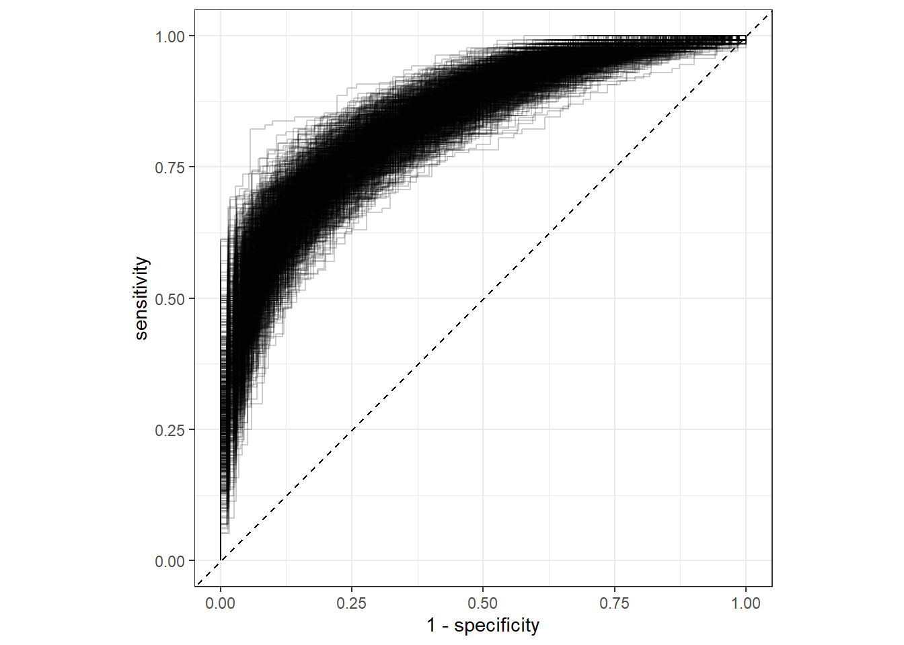
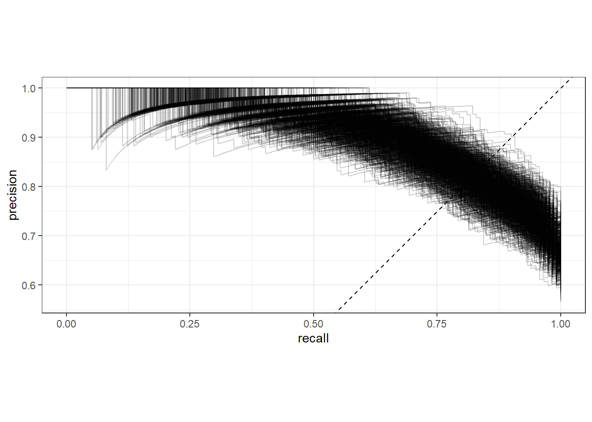
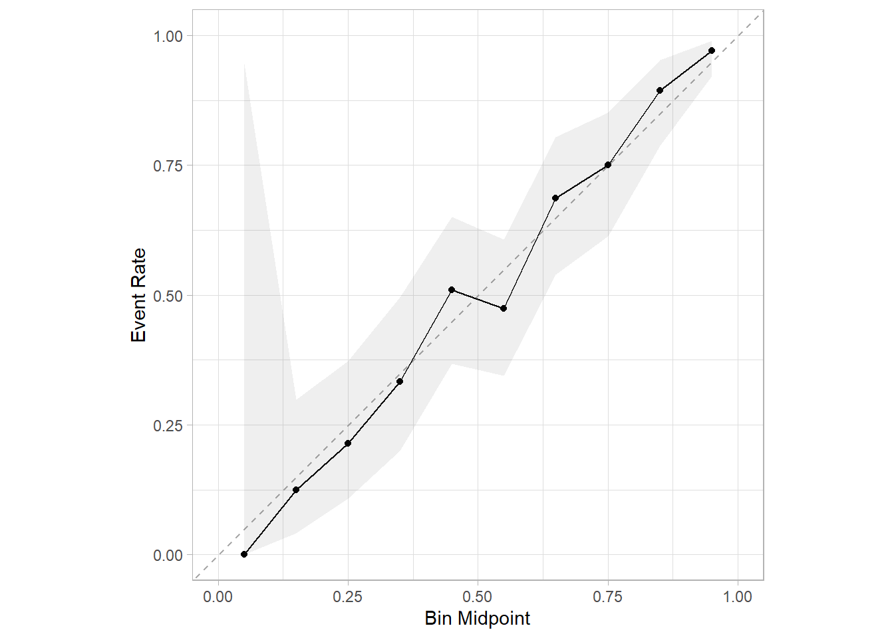

rm(list = ls())
load(file = "datasets/pimadiabetes.rdata")
dim(pimadiabetes)
## [1] 768 9
str(pimadiabetes)
## 'data.frame': 768 obs. of 9 variables:
## $ pregnant: num 6 1 8 1 0 5 3 10 2 8 ...
## $ glucose : num 148 85 183 89 137 116 78 115 197 125 ...
## $ pressure: num 72 66 64 66 40 ...
## $ triceps : num 35 29 22.9 23 35 ...
## $ insulin : num 202.2 64.6 217.1 94 168 ...
## $ mass : num 33.6 26.6 23.3 28.1 43.1 ...
## $ pedigree: num 0.627 0.351 0.672 0.167 2.288 ...
## $ age : num 50 31 32 21 33 30 26 29 53 54 ...
## $ diabetes: Factor w/ 2 levels "pos","neg": 2 1 2 1 2 1 2 1 2 2 ...38 bootstrap一切指标
下面给大家演示如何用tidymodels实现bootstrap任意指标，这样你就可以获得任意指标的bootstrap置信区间，对于一些图形，比如ROC曲线，还可以顺便获得bootstrap-ROC曲线。
这个方法是通用的方法，主要有以下优点：
- 适用于一切模型（tidymodels支持的模型），不只是线性回归、逻辑回归；
- 适用于一切指标（tidymodels支持的模型）；
- 与内部重抽样的方法无关，即使不是bootstrap法，也能计算bootstrap法的置信区间
下面就以随机森林模型为例，实现各种指标的bootstrap！
38.1 加载数据和R包
演示数据为印第安人糖尿病数据集，这个数据一共有768行，9列，其中diabetes是结果变量，为二分类，其余列是预测变量。
各个变量的含义：
pregnant：怀孕次数glucose：血浆葡萄糖浓度（葡萄糖耐量试验）pressure：舒张压（毫米汞柱）triceps：三头肌皮褶厚度（mm）insulin：2小时血清胰岛素（mu U/ml）mass：BMIpedigree：糖尿病谱系功能，是一种用于预测糖尿病发病风险的指标，该指标是基于家族史的糖尿病遗传风险因素的计算得出的。它计算了患者的家族成员是否患有糖尿病以及他们与患者的亲缘关系，从而得出一个综合评分，用于预测患糖尿病的概率。age：年龄diabetes：是否有糖尿病
library(tidymodels)38.2 数据划分和模型选择
划分训练集、测试集。
set.seed(123)
split <- initial_split(pimadiabetes, prop = 0.7, strata = diabetes)
train <- training(split)
test <- testing(split)
dim(train)
## [1] 537 9
dim(test)
## [1] 231 9模型选择随机森林模型，如果你想用其他模型，就换其他模型就好了：
rf_spec <- rand_forest(engine = "ranger",mode = "classification",trees = 200)下面就是建立工作流：
rf_rec <- recipe(diabetes ~ ., data = pimadiabetes)
rf_wf <- workflow(preprocessor = rf_rec, spec = rf_spec)38.3 内部重抽样和建模
选择内部重抽样方法，这里就选大家最常问的bootstrap法，bootstrap的次数为1000次！
set.seed(1223)
resampling <- bootstraps(train, times = 1000)建立模型，评价指标把能选的都选上，主打一个大而全：
ctrl <- control_resamples(verbose = F, save_pred = T)
set.seed(123)
res <- fit_resamples(rf_wf,
resamples = resampling,
# 常见的指标都选上！
metrics = metric_set(roc_auc, sens, spec, mcc, f_meas,
j_index, brier_class, precision,
accuracy, pr_auc, mn_log_loss,
brier_class),
control = ctrl)由于版本不同，有些人复制粘贴这段代码可能会报错，没关系，看下帮助文档即可（或者直接不写metrics这个参数，它有默认值的），小问题！
38.4 查看结果
查看各个指标的结果：
collect_metrics(res)
## # A tibble: 11 × 6
## .metric .estimator mean n std_err .config
## <chr> <chr> <dbl> <int> <dbl> <chr>
## 1 accuracy binary 0.762 1000 0.000778 Preprocessor1_Model1
## 2 brier_class binary 0.154 2000 0.000258 Preprocessor1_Model1
## 3 f_meas binary 0.821 1000 0.000654 Preprocessor1_Model1
## 4 j_index binary 0.459 1000 0.00181 Preprocessor1_Model1
## 5 mcc binary 0.469 1000 0.00169 Preprocessor1_Model1
## 6 mn_log_loss binary 0.463 1000 0.000944 Preprocessor1_Model1
## 7 pr_auc binary 0.914 1000 0.000518 Preprocessor1_Model1
## 8 precision binary 0.805 1000 0.00109 Preprocessor1_Model1
## 9 roc_auc binary 0.843 1000 0.000702 Preprocessor1_Model1
## 10 sens binary 0.841 1000 0.00116 Preprocessor1_Model1
## 11 spec binary 0.618 1000 0.00208 Preprocessor1_Model1这个就是内部重抽样（重抽样方法选择的是1000次的bootstrap）得到的各种指标。
通过统计学中学过的点估计和区间估计法计算置信区间：置信区间=均值±z*标准误
95%置信区间是的z=1.96，是不是很熟悉的数字？
# 计算95%的置信区间
collect_metrics(res) %>%
dplyr::select(c(1,3,5)) %>%
mutate(lower = mean - 1.96*std_err,
upper = mean + 1.96*std_err)
## # A tibble: 11 × 5
## .metric mean std_err lower upper
## <chr> <dbl> <dbl> <dbl> <dbl>
## 1 accuracy 0.762 0.000778 0.761 0.764
## 2 brier_class 0.154 0.000258 0.154 0.155
## 3 f_meas 0.821 0.000654 0.820 0.823
## 4 j_index 0.459 0.00181 0.455 0.462
## 5 mcc 0.469 0.00169 0.466 0.473
## 6 mn_log_loss 0.463 0.000944 0.461 0.465
## 7 pr_auc 0.914 0.000518 0.913 0.915
## 8 precision 0.805 0.00109 0.803 0.807
## 9 roc_auc 0.843 0.000702 0.842 0.845
## 10 sens 0.841 0.00116 0.839 0.843
## 11 spec 0.618 0.00208 0.614 0.622但是使用这种方法计算置信区间说明“你默认这个数据是符合t分布的”，但实际上很多数据是不符合的，但是也没关系，这个方法也是正确的。
38.5 bootstrap分位数法
由于我们选择了1000次的bootstrap法，所以对于每个指标，都会得到1000个值，上面的计算置信区间的方法就是默认：对于每个指标的1000个值，符合t分布。
除此之外，我们还可以使用分位数法计算每个指标的95%置信区间。比如对于AUC这个指标，我们先提取出这1000个值，然后给大家画个图看看它们的分布：
res2 <- collect_metrics(res, summarize = F) # 获取每个指标的1000个值
res2 %>% filter(.metric == "roc_auc") %>% # 只选择auc这个指标
ggplot(aes(x = .estimate))+ # 画个图看看分布
geom_histogram(fill="grey",color="blue")+
labs(x="AUC")
上面这个图就是1000个AUC的分布，我们可以基于这1000个值，计算它的2.5%和97.5%分位数，这样就得到AUC的95%置信区间了：
ci_95 <- res2 %>% filter(.metric == "roc_auc") %>%
pull(.estimate) %>%
quantile(probs = c(0.025,0.975))
ci_95
## 2.5% 97.5%
## 0.7993783 0.8877514分位数法是最常见的计算置信区间的方法。我们把置信区间画在图中：
res2 %>% filter(.metric == "roc_auc") %>% # 只选择auc这个指标
ggplot(aes(x = .estimate))+ # 画个图看看分布
geom_histogram(fill="grey",color="blue")+
geom_vline(xintercept = ci_95,color="red")+
labs(x="AUC")
通过同样的方法就可以很方便的计算出所有指标的置信区间了：
ci_95_all <- res2 %>% group_nest(.metric) %>%
mutate(me = map(data, ~ pull(.x, .estimate)),
ci95 = map_df(me, quantile, probs=c(0.025,0.975))
) %>%
dplyr::select(.metric, ci95) %>%
unnest(ci95)
ci_95_all
## # A tibble: 11 × 3
## .metric `2.5%` `97.5%`
## <chr> <dbl> <dbl>
## 1 accuracy 0.712 0.812
## 2 brier_class 0.132 0.177
## 3 f_meas 0.780 0.862
## 4 j_index 0.344 0.567
## 5 mcc 0.363 0.575
## 6 mn_log_loss 0.407 0.522
## 7 pr_auc 0.879 0.946
## 8 precision 0.734 0.868
## 9 roc_auc 0.799 0.888
## 10 sens 0.766 0.913
## 11 spec 0.492 0.742这种方法非常正宗，得到的结果绝对可靠而且易于解释和理解。
38.6 bootstrap各种曲线
顺便再画个bootstrap-ROC曲线在，真的是像探囊取物一般简单！
collect_predictions(res) %>%
#filter(id == "Bootstrap002") %>%
group_by(id) %>%
roc_curve(truth = diabetes, .pred_pos) %>%
ggplot(aes(1-specificity, sensitivity))+
geom_path(alpha=0.2,aes(group=id))+
geom_abline(slope = 1,intercept = 0,linetype=2)+
coord_fixed()+
theme_bw()
顺手再来个1000次bootstrap的PR曲线：
collect_predictions(res) %>%
#filter(id == "Bootstrap002") %>%
group_by(id) %>%
pr_curve(truth = diabetes, .pred_pos) %>%
ggplot(aes(recall, precision))+
geom_path(alpha=0.2,aes(group=id))+
geom_abline(slope = 1,intercept = 0,linetype=2)+
coord_fixed()+
theme_bw()
你还想要lift-curve和gain-curve吗？我就不再重复了，因为太简单了！
顺手再画个校准曲线，也是1行代码搞定：
library(probably)
library(ggplot2)
# 带95%置信区间的校准曲线，这个不是bootstrap法
cal_plot_breaks(res,conf_level = 0.95)
这些指标和各种曲线，都是内部验证集的，且都使用了1000次bootstrap的内部重抽样方法，是不是非常easy呢？
38.7 更通用的方法
但是如果我们一开始采用的重抽样方法是交叉验证法或者单个验证集法，没有使用bootstrap法，那么这种方法就不能用了。
所以这里会给大家介绍一种更为通用的方法，用于计算bootstrap法的置信区间，你即使没有使用bootstrap法进行内部重抽样，依然可以计算出bootstrap的置信区间。
我们可以直接使用int_pctl()函数计算bootstrap分位数法的置信区间：
# 通过bootstrap分位数法计算置信区间
set.seed(123)
res_boot <- int_pctl(res, alpha = 0.05, times = 1000)
res_boot
## # A tibble: 11 × 6
## .metric .estimator .lower .estimate .upper .config
## <chr> <chr> <dbl> <dbl> <dbl> <chr>
## 1 accuracy bootstrap 0.728 0.767 0.803 Preprocessor1_Model1
## 2 brier_class bootstrap 0.133 0.148 0.165 Preprocessor1_Model1
## 3 f_meas bootstrap 0.790 0.826 0.854 Preprocessor1_Model1
## 4 j_index bootstrap 0.379 0.463 0.540 Preprocessor1_Model1
## 5 mcc bootstrap 0.394 0.476 0.553 Preprocessor1_Model1
## 6 mn_log_loss bootstrap 0.411 0.448 0.490 Preprocessor1_Model1
## 7 pr_auc bootstrap 0.894 0.919 0.940 Preprocessor1_Model1
## 8 precision bootstrap 0.760 0.804 0.844 Preprocessor1_Model1
## 9 roc_auc bootstrap 0.820 0.853 0.883 Preprocessor1_Model1
## 10 sens bootstrap 0.813 0.849 0.886 Preprocessor1_Model1
## 11 spec bootstrap 0.541 0.614 0.682 Preprocessor1_Model1这样就直接得到了所有指标的95%置信区间（.lower和.upper），虽然结果和上面计算的不太一样（计算过程不一样），但是都是对的，而且也是bootstrap分位数法。
就像我们上面说的，如果你一开始采用的内部重抽样方法不是bootstrap法，这种方法依然适用。
比如我们使用5折交叉验证法：
# 5折交叉验证法
set.seed(123)
res_fold <- fit_resamples(rf_wf,
resamples = vfold_cv(train,5),
#metrics = "roc_auc",
control = ctrl)
# 依然适用
set.seed(123)
bootresfold <- int_pctl(res_fold, times = 1000,alpha = 0.05)
bootresfold
## # A tibble: 3 × 6
## .metric .estimator .lower .estimate .upper .config
## <chr> <chr> <dbl> <dbl> <dbl> <chr>
## 1 accuracy bootstrap 0.723 0.761 0.797 Preprocessor1_Model1
## 2 brier_class bootstrap 0.137 0.153 0.171 Preprocessor1_Model1
## 3 roc_auc bootstrap 0.810 0.843 0.875 Preprocessor1_Model1结果也给出了3个指标各自的95%置信区间！
38.8 外部验证集的置信区间
如果你想获得外部验证集的bootstrap法置信区间，也是非常简单，tidymodels的作者作为生物统计专业的博士，早就为我们想好了。
首先是按照平常的步骤获取测试集（也就是外部验证集，也就是拟合模型时没用过的数据集）的性能指标：
# 在训练集建模，在测试集（即外部验证集）预测
test_res <- rf_wf %>%
last_fit(split)
# 获取测试集（即外部验证集）的性能指标
collect_metrics(test_res)
## # A tibble: 3 × 4
## .metric .estimator .estimate .config
## <chr> <chr> <dbl> <chr>
## 1 accuracy binary 0.771 Preprocessor1_Model1
## 2 roc_auc binary 0.842 Preprocessor1_Model1
## 3 brier_class binary 0.155 Preprocessor1_Model1对于这个结果，int_pctl()函数依然适用：
set.seed(123)
int_pctl(test_res, alpha = 0.05, times = 1000)
## # A tibble: 3 × 6
## .metric .estimator .lower .estimate .upper .config
## <chr> <chr> <dbl> <dbl> <dbl> <chr>
## 1 accuracy bootstrap 0.719 0.772 0.831 Preprocessor1_Model1
## 2 brier_class bootstrap 0.129 0.154 0.181 Preprocessor1_Model1
## 3 roc_auc bootstrap 0.786 0.843 0.896 Preprocessor1_Model1搞定，大功告成！
数据如何获取？老规矩，粉丝qq群文件自取。